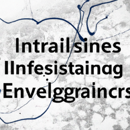

Navigating the Evolving Landscape of Business Intelligence and Analytics
The realm of Business Intelligence (BI) and Analytics is undergoing rapid transformation, with a pronounced focus on real-time intelligence to bolster decision-making and enhanced data visualization capabilities. As organizations strive to harness raw data for effective BI, key technologies like ETL (Extract, Transform, Load), CDC (Change Data Capture), and Data Deduplication are proving invaluable.
Acumatica has launched its Professional Services Edition, aiming to empower small and midsized firms in the professional services sector to enhance efficiency and drive growth. In the ongoing innovation spree within data management, AI and advanced analytics are reshaping how organizations leverage their data. Qualys, Inc. recently introduced a Risk Operations Center to help business leaders manage cybersecurity risks in real-time, while ScaleFlux is advancing its data storage technology to support global data production needs.
In the ever-expanding field of data governance, Oracle is revolutionizing the banking sector with its Financial Services Crime and Compliance Management Investigation Hub, aimed at streamlining the detection and resolution of financial crimes. This trend is echoed across industries as organizations seek to optimize their data strategies amidst increasing complexities and demands.
As we progress into a future dominated by data-driven decision-making, it’s essential to stay abreast of these trends. The integration of advanced AI and cloud services will not only enhance operational efficiencies but also pave the way for innovations that can redefine organizational growth trajectories.

https://www.dbta.com/Categories/Business-Intelligence-and-Analytics-327.aspx